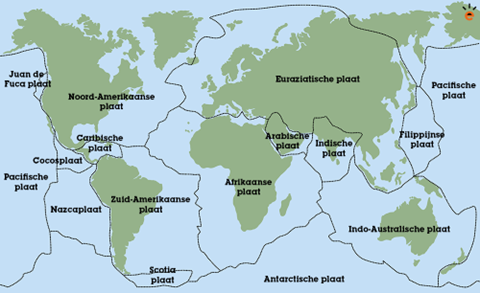

Per dag vinden er wereldwijd duizenden aardbevingen plaats. De meeste mensen op aarde merken hier niets van, maar dat geldt niet voor iedereen. Aardbevingen kennen namelijk een nogal wat catastrofale geschiedenis. Aardbevingen brengen wereldwijd duizenden
slachtoffers met zich mee en komen mede hierdoor op de top 1 van de meest dodelijke natuurrampen te staan. Enkele voorbeelden zijn: de aardbeving in Haiti in 2010, dat 200.000 levens heeft gekost, maar ook de aardbeving in Tōhoku,
Japan in 2011. Deze aardbeving koste maar liefst 16.000 doden en richtte bovendien grote schade aan de Fukushima kerncentrale aan met catastrofale gevolgen van dienWel worden aardbevingen dagelijks door talloze seismografen. De seismologen
maken met behulp van de seismografen een seismogram: een registratie van bodemtrillingen op een bepaald punt in de aarde.

Afbeelding 1
De Aarde bestaat uit 15 tektonische aardplaten waarvan 9 grote aardplaten zijn, en 6 kleinere aardplaten